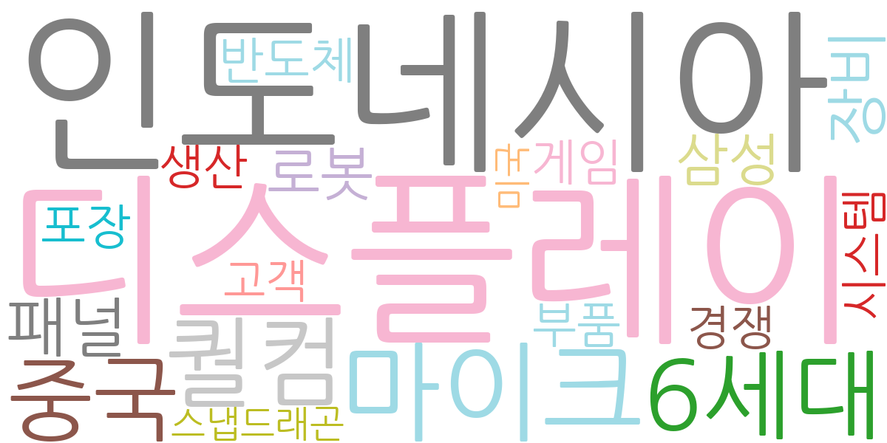
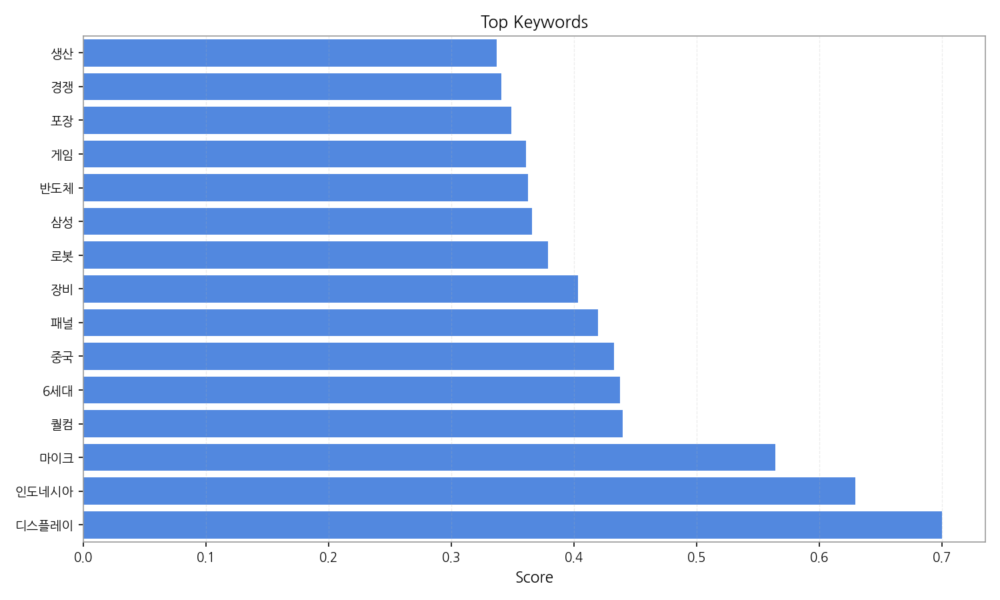
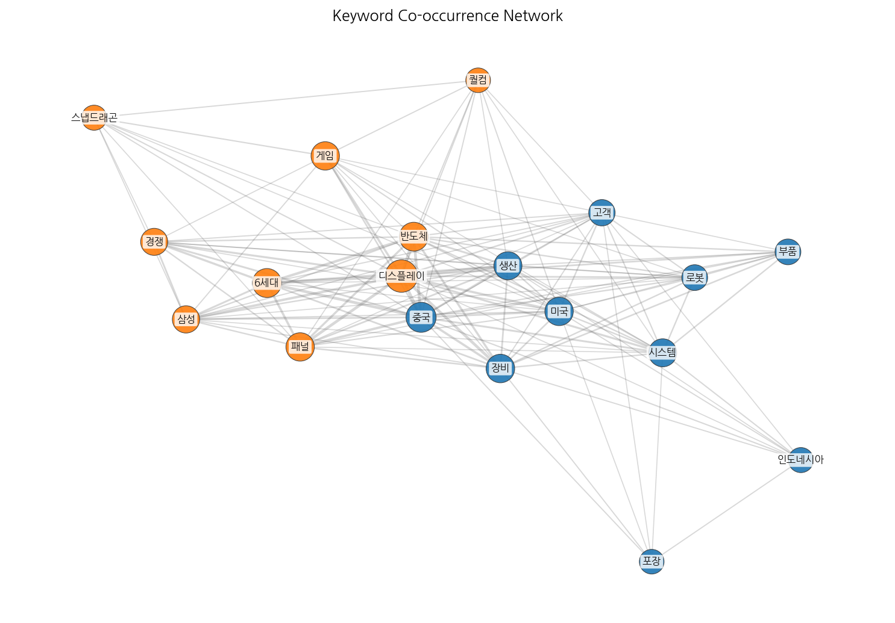
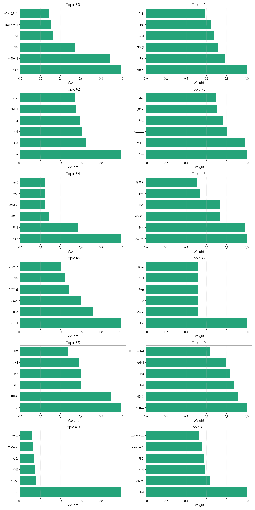
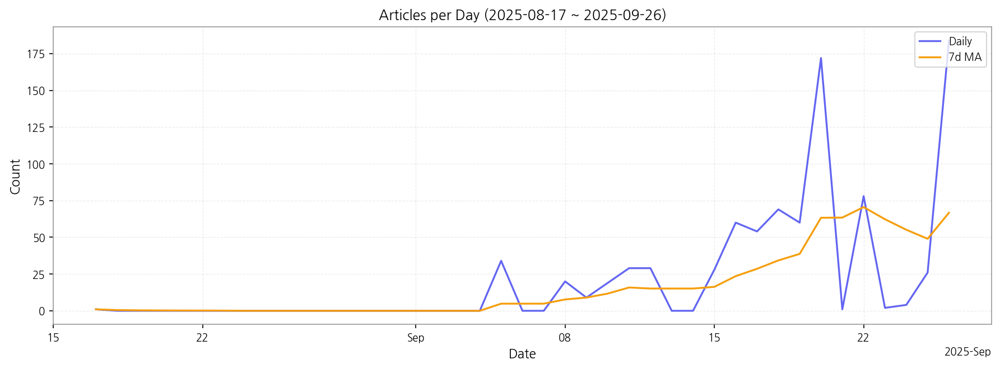

1. 핵심 맥락:
2. 최근 변화/스파이크:
3. 실무 인사이트:

| Rank | Keyword | Score |
|---|---|---|
| 1 | 디스플레이 | 0.700 |
| 2 | 인도네시아 | 0.629 |
| 3 | 마이크 | 0.564 |
| 4 | 퀄컴 | 0.440 |
| 5 | 6세대 | 0.437 |
| 6 | 중국 | 0.433 |
| 7 | 패널 | 0.419 |
| 8 | 장비 | 0.403 |
| 9 | 로봇 | 0.379 |
| 10 | 삼성 | 0.366 |
| 11 | 반도체 | 0.362 |
| 12 | 게임 | 0.361 |
| 13 | 포장 | 0.349 |
| 14 | 경쟁 | 0.341 |
| 15 | 생산 | 0.337 |




1. 핵심 맥락:
2. 최근 변화/스파이크:
3. 실무 인사이트:
| Idea | Target | Value Prop | Score |
|---|---|---|---|
| XR 글래스용 초고해상도 MicroLED 모듈 및 광학 엔진 통합 솔루션 | 북미 빅테크 기업 (AR/VR/XR 기기 제조사), 메타버스 플랫폼 개발사 | 자체 개발한 초고해상도 MicroLED 디스플레이와 초소형 광학 엔진을 통합하여 XR 글래스의 몰입감을 극대화하고, 경량화 및 저전력 설계를 통해 사용자 편의성을 향상. 경쟁사 대비 높은 밝기, 명암비, 색재현율 제공. | 4.50 |
| AI 기반 차량용 HUD (Head-Up Display) 개인 맞춤형 솔루션 | 글로벌 완성차 OEM (프리미엄 브랜드 중심), 자율주행 솔루션 개발 기업 | AI 기반 시선 추적 및 운전 패턴 분석을 통해 HUD 정보를 실시간으로 최적화하여 운전 집중도를 높이고 안전성을 향상. AR 내비게이션, 위험 경고, 엔터테인먼트 기능 통합으로 차별화된 사용자 경험 제공. | 4.20 |
| OLED/MicroLED 제조 공정용 AI 기반 결함 검출 및 예측 시스템 | 국내외 디스플레이 패널 제조사, 반도체 제조사 | AI 기반 이미지 분석 및 머신러닝 알고리즘을 통해 OLED/MicroLED 제조 공정에서 발생하는 미세한 결함을 실시간으로 검출하고, 결함 발생 가능성을 예측하여 수율을 향상. 기존 검사 시스템 대비 높은 정확도, 빠른 검사 속도, 낮은 오탐율 제공. | 4.00 |
| IT 기기용 벤더블 OLED 패널 및 접착 소재 솔루션 | 글로벌 스마트폰 제조사, 노트북 제조사 | 자체 개발한 초박형 벤더블 OLED 패널과 고탄성 접착 소재를 결합하여 폴더블/롤러블 기기의 내구성을 극대화하고, 뛰어난 화질과 디자인 자유도를 제공. 경쟁사 대비 얇고 가벼운 패널, 넓은 곡률 반경 지원. | 3.80 |
| 차량용 디스플레이 신뢰성 향상을 위한 고분자 보호 필름 개발 및 공급 | 글로벌 완성차 OEM, 차량용 디스플레이 제조사 | 자체 개발한 고분자 소재 및 코팅 기술을 적용하여 차량용 디스플레이의 내구성을 향상시키고, 뛰어난 광학 특성 및 친환경성을 제공. 경쟁사 대비 높은 내열성, 내습성, 내스크래치성, 낮은 반사율 제공. | 3.50 |